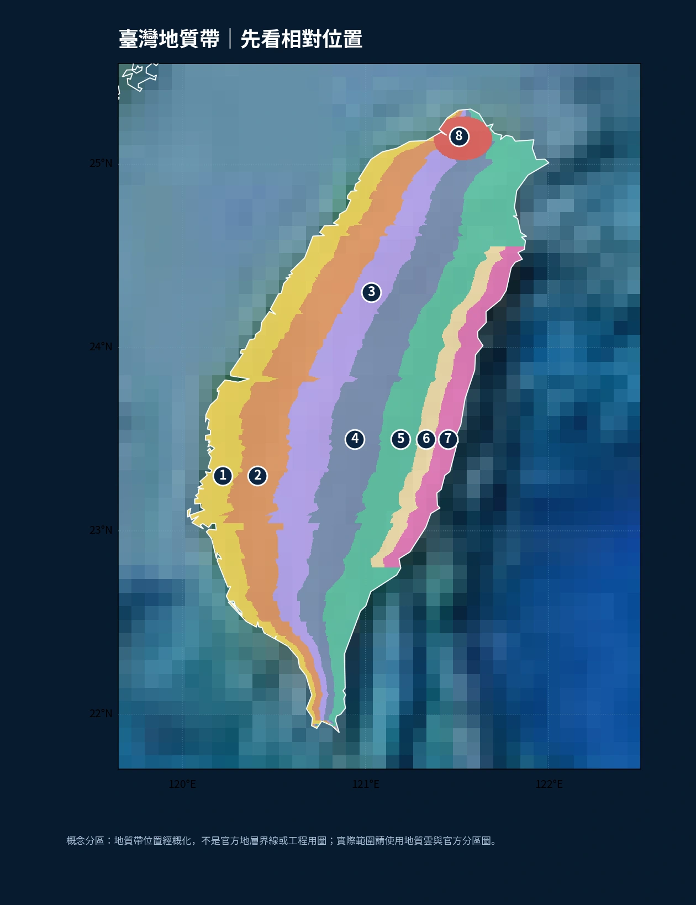
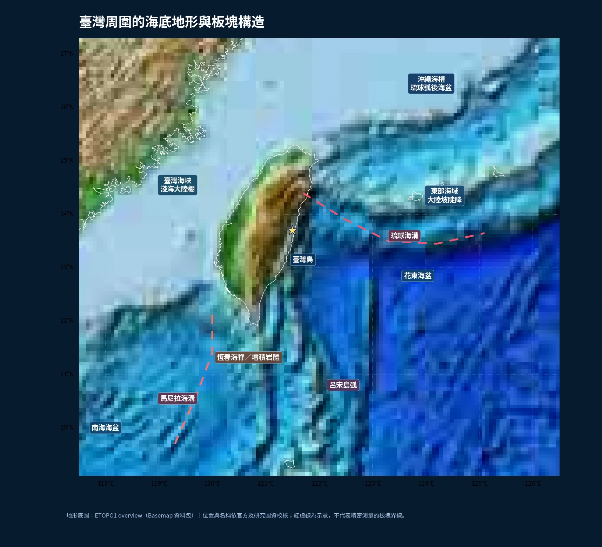
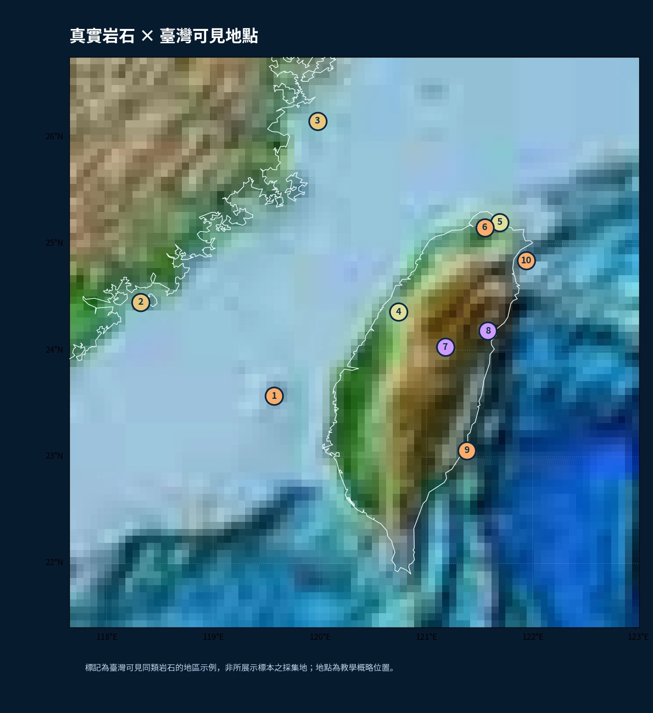

琉球海溝 ≠ 沖繩海槽
琉球海溝是隱沒帶的海溝；沖繩海槽位於琉球島弧後方，與張裂作用相關。兩者名稱接近，成因與構造位置不同。
第三章精修 · 真實地理 × 岩石標本 × 立體機制
先找到臺灣周圍的海溝、海槽和海盆；再看島上被擠壓抬升的岩石，最後回到你能在臺灣看到的真實岩石標本。地圖不是拿來背顏色，而是讓你推理「地形、岩性、板塊運動」之間的關係。
與其一次背八個名詞，不如先抓住大方向：西部主要看到較年輕的沉積岩；往中央走，變質作用與構造變形更明顯；東部海岸山脈又有島弧火山岩的故事。

圖中地質帶邊界已為高一教學簡化，並非官方精密地層界線；精細資料可從下方官方地質圖查看。
臺灣不是孤立的高山島；北方連著琉球隱沒帶及沖繩海槽，南方與馬尼拉海溝、呂宋島弧相連，東側海水下還有很深的海盆與陡峭的海底坡地。

地形背景為 ETOPO1 概覽解析度；紅色虛線是教學位置提示，不是精密板塊界線或海底測線。
琉球海溝是隱沒帶的海溝；沖繩海槽位於琉球島弧後方，與張裂作用相關。兩者名稱接近，成因與構造位置不同。
南方的歐亞板塊海洋岩石圈向東隱沒，海溝在隱沒起點附近；呂宋島弧位於其東方，是火山島弧系統的一部分。
東臺灣靠近活動板塊邊界與深水盆地，岸外的海底坡度與臺灣西部淺海棚區明顯不同。
從海洋往大陸看：海溝在前面，增積岩體像被推皺的地毯，板塊一路向下形成傾斜地震帶，部分熔融與岩漿上升才可能形成火山弧。
海溝位於臺灣東北外海，往北進入歐亞板塊一側之下，與琉球島弧、沖繩海槽構成相互關聯但不相同的構造單元。
南海所在的歐亞板塊一側，向東隱沒到菲律賓海板塊的呂宋島弧之下；地表可見馬尼拉海溝與呂宋弧系統。
這一區用你提供教材中的岩石實物照片局部裁切（不是 AI 畫的假石頭），分辨外觀後，再把「哪裡能看到這種岩石」連回臺灣地質區。

標號是臺灣能找到相關岩石或典型地景的地區示例；照片本身不是這些地點的採集證明。
題目參考你提供的第三章判圖範圍，重新設計地質分區、岩石樣本、海底構造與隱沒判讀題。這裡是單章實戰；正式第二次段考 A／B 卷應再整合第四章大氣篇，不會只拿第三章冒充完整段考。
第三章：地震波、地球分層、岩石、板塊、大陸漂移、臺灣地質；第四章：氣壓與分層、水循環、飽和與露點、成雲降雨、風與科氏力、天氣圖與鋒面。這兩章會分配圖表判讀、情境素養與數值題，另出 A／B 兩卷。本版先修正地質圖與岩石教學，不以未完成的大氣章假裝完整段考。
海底地形底圖使用 Basemap 隨附 ETOPO1 overview，為實際地形資料的概覽層級，非高解析航測成果。地質帶彩色覆蓋圖是根據主要分區概念製作的示意圖；所有真實海岸與地理位置以經緯度為基準，細部地質界線請查官方地質雲。岩石照片來自使用者提供之教材實物照片裁切，並非生成影像或已驗證臺灣產地標本；公開發布若需擴大使用，請確認原始照片授權，或替換成開放授權專業標本。